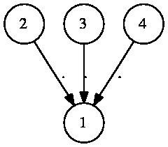

Self-similar groups, monoids and semigroups (below FR semigroups) are simply groups, monoids and semigroups whose elements are FR machines. They naturally act on the alphabet of their elements, and on sequences over that alphabet.
Most non-trivial calculations in FR groups are performed as follows: GAP searches through words of short length in the generating set of a FR group to find a solution to a group-theoretic question, and at the same time searches through the finite quotients to prove the inexistence of a solution. Often the calculation ends with the answer fail, which means that no definite answer, neither positive nor negative, could be found; however, the cases where the calculation actually terminates have been most useful.
The maximal length of words to consider in the search is controlled by the variable FR_SEARCH.radius (initially 10), and the maximal depth of the tree in which to search is controlled by the variable FR_SEARCH.depth (initially 6). These limits can be modified in any function call using GAP's options mechanism, e.g. in Index(G,H:FRdepth:=5,FRradius:=5).
The most straightforward creation method for FR groups is Group(), applied with FR elements as arguments. There are shortcuts to this somewhat tedious method:
‣ FRGroup( {definition, } ) | ( operation ) |
‣ FRMonoid( {definition, } ) | ( operation ) |
‣ FRSemigroup( {definition, } ) | ( operation ) |
Returns: A new self-similar group/monoid/semigroup.
This function constructs a new FR group/monoid/semigroup, generated by group FR elements. It receives as argument any number of strings, each of which represents a generator of the object to be constructed.
Each definition is of the form "name=projtrans", where each of proj and trans is optional. proj is of the form <w1,...,wd>, where each wi is a (possibly empty) word in the names or is 1. trans is either a permutation in disjoint cycle notation, or a list, representing the images of a permutation.
The last argument may be one of the filters IsMealyElement, IsFRMealyElement or IsFRElement. By default, if each of the states of generators is a generator or 1, the elements of the created object will be Mealy elements; otherwise, they will be FR elements. Specifying such a filter requires them to be in the appropriate category; e.g., FRGroup("a=(1,2)",IsFRMealyElement) asks for the resulting group to be generated by FR-Mealy elements. The generators must of course be finite-state.
gap> FRGroup("a=(1,2)","b=(1,2,3,4,5)"); Size(last); <self-similar group over [ 1 .. 5 ] with 2 generators> 120 gap> Dinfinity := FRGroup("a=(1,2)","b=<a,b>"); <self-similar group over [ 1 .. 2 ] with 2 generators> gap> AssignGeneratorVariables(Dinfinity); #I Assigned the global variables [ a, b ] gap> Order(a); Order(b); Order(a*b); 2 2 infinity gap> ZZ := FRGroup("t=<,t>[2,1]"); <self-similar group over [ 1 .. 2 ] with 1 generator> tau := FRElement([[[b,1],[1]]],[()],[1]); <2|f3> gap> IsSubgroup(Dinfinity,ZZ); false gap> IsSubgroup(Dinfinity^tau,ZZ); true gap> Index(Dinfinity^tau,ZZ); 2
gap> i4 := FRMonoid("s=(1,2)","f=<s,f>[1,1]"); <self-similar monoid over [ 1 .. 2 ] with 2 generators> gap> f := GeneratorsOfMonoid(i4){[1,2]};; gap> for i in [1..10] do Add(f,f[i]*f[i+1]); od; gap> f[1]^2=One(m); true gap> f[2]^3=f[2]; true gap> f[11]*f[10]^2=f[1]*Product(f{[5,7..11]})*f[10]; true gap> f[12]*f[11]^2=f[2]*Product(f{[6,8..12]})*f[11]; true
gap> i2 := FRSemigroup("f0=<f0,f0>(1,2)","f1=<f1,f0>[2,2]"); <self-similar semigroup over [ 1 .. 2 ] with 2 generators> gap> AssignGeneratorVariables(i2); #I Assigned the global variables [ "f0", "f1" ] gap> f0^2=One(i2); true gap> ForAll([0..10],p->(f0*f1)^p*(f1*f0)^p*f1=f1^2*(f0*f1)^p*(f1*f0)^p*f1); true
‣ NewSemigroupFRMachine( ... ) | ( attribute ) |
‣ NewMonoidFRMachine( ... ) | ( attribute ) |
‣ NewGroupFRMachine( ... ) | ( attribute ) |
Returns: A new FR machine, based on string descriptions.
This command constructs a new FR machine, in a format similar to FRGroup (7.1-1); namely, the arguments are strings of the form "gen=<word-1,...,word-d>perm"; each word-i is a word in the generators; and perm is a transformation, either written in disjoint cycle or in images notation.
Except in the semigroup case, word-i is allowed to be the empty string; and the "<...>" may be skipped altogether. In the group or IMG case, each word-i may also contain inverses.
The following example constructs the "universal Grigorchuk machine".
gap> m := NewGroupFRMachine("a=(1,2)(3,4)(5,6)","b=<a,b,a,b,,b>", "c=<a,c,,c,a,c>","d=<,d,a,d,a,d>"); gap> <FR machine with alphabet [ 1, 2, 3, 4, 5, 6 ] on Group( [ a, b, c, d ] )>
‣ SCGroup( m ) | ( operation ) |
‣ SCGroupNC( m ) | ( operation ) |
‣ SCMonoid( m ) | ( operation ) |
‣ SCMonoidNC( m ) | ( operation ) |
‣ SCSemigroup( m ) | ( operation ) |
‣ SCSemigroupNC( m ) | ( operation ) |
Returns: The state-closed group/monoid/semigroup generated by the machine m.
This function constructs a new FR group/monoid/semigroup g, generated by all the states of the FR machine m. There is a bijective correspondence between GeneratorsOfFRMachine(m) and the generators of g, which is accessible via Correspondence(g) (See Correspondence (7.1-4)); it is a homomorphism from the stateset of m to g, or a list indicating for each state of m a corresponding generator index in the generators of g (with negatives for inverses, and 0 for identity).
In the non-NC forms, redundant (equal, trivial or mutually inverse) states are removed from the generating set of g.
gap> b := MealyMachine([[3,2],[3,1],[3,3]],[(1,2),(),()]);; g := SCGroupNC(b); <self-similar group over [ 1 .. 2 ] with 3 generators> gap> Size(g); infinity gap> IsOne(Comm(g.2,g.2^g.1)); true
gap> i4machine := MealyMachine([[3,3],[1,2],[3,3]],[(1,2),[1,1],()]); <Mealy machine on alphabet [ 1, 2 ] with 3 states> gap> IsInvertible(i4machine); false gap> i4 := SCMonoidNC(i4machine); <self-similar monoid over [ 1 .. 2 ] with 3 generators> gap> f := GeneratorsOfMonoid(i4){[1,2]};; gap> for i in [1..10] do Add(f,f[i]*f[i+1]); od; gap> f[1]^2=One(m); true gap> f[2]^3=f[2]; true gap> f[11]*f[10]^2=f[1]*Product(f{[5,7..11]})*f[10]; true gap> f[12]*f[11]^2=f[2]*Product(f{[6,8..12]})*f[11]; true
gap> i2machine := MealyMachine([[1,1],[2,1]],[(1,2),[2,2]]); <Mealy machine on alphabet [ 1, 2 ] with 2 states> gap> i2 := SCSemigroupNC(i2machine); <self-similar semigroup over [ 1 .. 2 ] with 2 generators> gap> f0 := GeneratorsOfSemigroup(i2)[1];; f1 := GeneratorsOfSemigroup(i2)[2];; gap> f0^2=One(i2); true gap> ForAll([0..10],p->(f0*f1)^p*(f1*f0)^p*f1=f1^2*(f0*f1)^p*(f1*f0)^p*f1); true
‣ Correspondence( g ) | ( attribute ) |
Returns: A correspondence between the generators of the underlying FR machine of g and g.
If g was created as the state closure of an FR machine m, this attribute records the correspondence between m and g.
If m is a group/monoid/semigroup/algebra FR machine, then Correspondence(g) is a homomorphism from the stateset of m to g.
If m is a Mealy or vector machine, then Correspondence(g) is a list, with in position i the index in the generating set of g of state number i. This index is 0 if there is no corresponding generator because the state is trivial, and is negative if there is no corresponding generator because the inverse of state number i is a generator.
See SCGroupNC (7.1-3), SCGroup (7.1-3), SCMonoidNC (7.1-3), SCMonoid (7.1-3), SCSemigroupNC (7.1-3), SCSemigroup (7.1-3), SCAlgebraNC (8.1-2), SCAlgebra (8.1-2), SCAlgebraWithOneNC (8.1-2), and SCAlgebraWithOne (8.1-2) for examples.
‣ FullSCGroup( ... ) | ( function ) |
‣ FullSCMonoid( ... ) | ( function ) |
‣ FullSCSemigroup( ... ) | ( function ) |
Returns: A maximal state-closed group/monoid/semigroup on the alphabet a.
This function constructs a new FR group, monoid or semigroup, which contains all transformations with given properties of the tree with given alphabet.
The arguments can be, in any order: a semigroup, specifying which vertex actions are allowed; a set or domain, specifying the alphabet of the tree; an integer, specifying the maximal depth of elements; and a filter among IsFinitaryFRElement (5.2-10), IsBoundedFRElement (5.2-12), IsPolynomialGrowthFRElement (5.2-13) and IsFiniteStateFRElement (4.2-12).
This object serves as a container for all FR elements with alphabet a. Random elements can be drawn from it; they are Mealy elements with a random number of states, and with the required properties.
gap> g := FullSCGroup([1..3]); FullSCGroup([ 1 .. 3 ]); gap> IsSubgroup(g,GuptaSidkiGroup); true gap> g := FullSCGroup([1..3],Group((1,2,3))); FullSCGroup([ 1 .. 3 ], Group( [ (1,2,3) ] )) gap> IsSubgroup(g,GuptaSidkiGroup); true gap> IsSubgroup(g,GrigorchukGroup); false gap> Random(g); <Mealy element on alphabet [ 1, 2, 3 ] with 2 states, initial state 1> gap> Size(FullSCGroup([1,2],3)); 128 gap> g := FullSCMonoid([1..2]); FullSCMonoid([ 1 .. 2 ]) gap> IsSubset(g,AsTransformation(FullSCGroup([1..2]))); true gap> IsSubset(g,AsTransformation(GrigorchukGroup)); true gap> g := FullSCSemigroup([1..3]); FullSCSemigroup([ 1 .. 3 ]) gap> h := FullSCSemigroup([1..3],Semigroup(Transformation([1,1,1]))); FullSCSemigroup([ 1 .. 3 ], Semigroup( [ [ 1, 1, 1 ] ] )) gap> Size(h); 1 gap> IsSubset(g,h); true gap> g=FullSCMonoid([1..3]); true
‣ FRMachineFRGroup( g ) | ( operation ) |
‣ FRMachineFRMonoid( g ) | ( operation ) |
‣ FRMachineFRSemigroup( g ) | ( operation ) |
‣ MealyMachineFRGroup( g ) | ( operation ) |
‣ MealyMachineFRMonoid( g ) | ( operation ) |
‣ MealyMachineFRSemigroup( g ) | ( operation ) |
Returns: A machine describing all generators of g.
This function constructs a new group/monoid/semigroup/Mealy FR machine, with (at least) one generator per generator of g. This is done by adding all machines of all generators of g, and minimizing.
In particular, if g is state-closed, then SCGroup(FRMachineFRGroup(g)) gives a group isomorphic to g, and similarly for monoids and semigroups.
gap> FRMachineFRGroup(GuptaSidkiGroup); <FR machine with alphabet [ 1 .. 3 ] on Group( [ f11, f12 ] )> gap> Display(last); G | 1 2 3 -----+--------+----------+--------+ f11 | <id>,2 <id>,3 <id>,1 f12 | f11,1 f11^-1,2 f12,3 -----+--------+----------+--------+
gap> FRMachineFRMonoid(I4Monoid); <FR machine with alphabet [ 1 .. 2 ] on Monoid( [ m11, m12 ], ... )> gap> Display(last); M | 1 2 -----+--------+--------+ m11 | <id>,2 <id>,1 m12 | m11,1 m12,1 -----+--------+--------+
gap> FRMachineFRSemigroup(I2Monoid); <FR machine with alphabet [ 1 .. 2 ] on Semigroup( [ s11, s12, s1 ] )> gap> Display(last); S | 1 2 -----+-------+-------+ s11 | s11,1 s11,2 s12 | s12,2 s12,1 s1 | s1,2 s12,2 -----+-------+-------+
‣ IsomorphismFRGroup( g ) | ( operation ) |
‣ IsomorphismFRMonoid( g ) | ( operation ) |
‣ IsomorphismFRSemigroup( g ) | ( operation ) |
Returns: An isomorphism towards a group/monoid/semigroup on a single FR machine.
This function constructs a new FR group/monoid/semigroup, such that all elements of the resulting object have the same underlying group/monoid/semigroup FR machine.
gap> phi := IsomorphismFRGroup(GuptaSidkiGroup); [ <Mealy element on alphabet [ 1, 2, 3 ] with 2 states, initial state 1>, <Mealy element on alphabet [ 1, 2, 3 ] with 4 states, initial state 1> ] -> [ <3|identity ...>, <3|f1>, <3|f1^-1>, <3|f2> ] gap> Display(GuptaSidkiGroup.2); | 1 2 3 ---+-----+-----+-----+ a | a,1 a,2 a,3 b | a,2 a,3 a,1 c | a,3 a,1 a,2 d | b,1 c,2 d,3 ---+-----+-----+-----+ Initial state: d gap> Display(GuptaSidkiGroup.2^phi); | 1 2 3 ----+--------+---------+--------+ f1 | <id>,2 <id>,3 <id>,1 f2 | f1,1 f1^-1,2 f2,3 ----+--------+---------+--------+ Initial state: f2
gap> phi := IsomorphismFRSemigroup(I2Monoid); MappingByFunction( I2, <self-similar semigroup over [ 1 .. 2 ] with 3 generators>, <Operation "AsSemigroupFRElement"> ) gap> Display(GeneratorsOfSemigroup(I2Monoid)[3]); | 1 2 ---+-----+-----+ a | a,2 b,2 b | b,2 b,1 ---+-----+-----+ Initial state: a gap> Display(GeneratorsOfSemigroup(I2Monoid)[3]^phi); S | 1 2 ----+------+------+ s1 | s1,2 s2,2 s2 | s2,2 s2,1 ----+------+------+ Initial state: s1
gap> phi := IsomorphismFRMonoid(I4Monoid); MappingByFunction( I4, <self-similar monoid over [ 1 .. 2 ] with 2 generators>, <Operation "AsMonoidFRElement"> ) gap> Display(GeneratorsOfMonoid(I4Monoid)[1]); | 1 2 ---+-----+-----+ a | b,2 b,1 b | b,1 b,2 ---+-----+-----+ Initial state: a gap> Display(GeneratorsOfMonoid(I4Monoid)[1]^phi); M | 1 2 ----+--------+--------+ m1 | <id>,2 <id>,1 ----+--------+--------+ Initial state: m1
‣ IsomorphismMealyGroup( g ) | ( operation ) |
‣ IsomorphismMealyMonoid( g ) | ( operation ) |
‣ IsomorphismMealySemigroup( g ) | ( operation ) |
Returns: An isomorphism towards a group/monoid/semigroup all of whose elements are Mealy machines.
This function constructs a new FR group/monoid/semigroup, such that all elements of the resulting object are Mealy machines.
gap> G := FRGroup("a=(1,2)","b=<a,b>","c=<c,b>"); <self-similar group over [ 1 .. 2 ] with 3 generators> gap> phi := IsomorphismMealyGroup(G); [ <2|a>, <2|b>, <2|c> ] -> [ <Mealy element on alphabet [ 1, 2 ] with 2 states, initial state 1>, <Mealy element on alphabet [ 1, 2 ] with 3 states, initial state 1>, <Mealy element on alphabet [ 1, 2 ] with 4 states, initial state 1> ] gap> Display(G.3); | 1 2 ---+--------+--------+ a | <id>,2 <id>,1 b | a,1 b,2 c | c,1 b,2 ---+--------+--------+ Initial state: c gap> Display(G.3^phi); | 1 2 ---+-----+-----+ a | a,1 b,2 b | c,1 b,2 c | d,2 d,1 d | d,1 d,2 ---+-----+-----+ Initial state: a
‣ FRGroupByVirtualEndomorphism( hom[, transversal] ) | ( operation ) |
Returns: A new self-similar group.
This function constructs a new FR group P, generated by group FR elements. Its first argument is a virtual endomorphism of a group G, i.e. a homomorphism from a subgroup H to G. The constructed FR group acts on a tree with alphabet a transversal of H in G (represented as [1..d]), and is a homomorphic image of G. The stabilizer of the first-level vertex corresponding to the trivial coset is the image of H. This function is loosely speaking an inverse of VirtualEndomorphism (7.2-29).
The optional second argument is a transversal of H in G, either of type IsRightTransversal or a list.
Furthermore, an option "MealyElement" can be passed to the function, as FRGroupByVirtualEndomorphism(f:MealyElement), to require the resulting group to be generated by Mealy elements and not FR elements. The call will succeed, of course, only if the representation of G is finite-state.
The resulting FR group has an attribute Correspondence(P) that records a homomorphism from G to P.
The example below constructs the binary adding machine, and a non-standard representation of it.
gap> G := FreeGroup(1); <free group on the generators [ f1 ]> gap> f := GroupHomomorphismByImages(Group(G.1^2),G,[G.1^2],[G.1]); [ f1^2 ] -> [ f1 ] gap> H := FRGroupByVirtualEndomorphism(f); <self-similar group over [ 1 .. 2 ] with 1 generator> gap> Display(H.1); | 1 2 ----+--------+------+ x1 | <id>,2 x1,1 ----+--------+------+ Initial state: x1 gap> Correspondence(H); [ f1 ] -> [ <2|x1> ] gap> H := FRGroupByVirtualEndomorphism(f,[G.1^0,G.1^3]);; gap> Display(H.1); | 1 2 ----+---------+--------+ x1 | x1^-1,2 x1^2,1 ----+---------+--------+ Initial state: x1 gap> H := FRGroupByVirtualEndomorphism(f:MealyElement); <self-similar group over [ 1 .. 2 ] with 1 generator> gap> Display(H.1); | 1 2 ---+-----+-----+ a | b,2 a,1 b | b,1 b,2 ---+-----+-----+ Initial state: a
‣ TreeWreathProduct( g, h, x0, y0 ) | ( operation ) |
Returns: The tree-wreath product of groups g,h.
The tree-wreath product of two FR groups is a group generated by a copy of g and of h, in such a way that many conjugates of g commute.
More formally, assume without loss of generality that all generators of g are states of a machine m, and that all generators of h are states of a machine n. Then the tree-wreath product is generated by the images of generators of g,h in TreeWreathProduct(m,n,x0,y0).
For the operation on FR machines see TreeWreathProduct (3.5-8)). It is described (with small variations, and in lesser generality) in [Sid05]. For example, in
gap> w := TreeWreathProduct(AddingGroup(2),AddingGroup(2),1,1); <recursive group over [ 1 .. 4 ] with 2 generators> gap> a := w.1; b := w.2; <Mealy element on alphabet [ 1 .. 4 ] with 3 states> <Mealy element on alphabet [ 1 .. 4 ] with 2 states> gap> Order(a); Order(b); infinity infinity gap> ForAll([-100..100],i->IsOne(Comm(a,a^(b^i)))); true
the group w is the wreath product Z≀ Z.
‣ WeaklyBranchedEmbedding( g ) | ( operation ) |
Returns: A embedding of g in a weakly branched group.
This function constructs a new FR group, on alphabet the square of the alphabet of g. It is generated by the canonical copy of g and by the tree-wreath product of g with an adding machine on the same alphabet as g (see TreeWreathProduct (7.1-10)). The function returns a group homomorphism into this new FR group.
The main result of [SW03] is that the resulting group h is weakly branched. More precisely, h' contains |X|^2 copies of itself. gap> f := WeaklyBranchedEmbedding(BabyAleshinGroup);; gap> Range(f); <recursive group over [ 1 .. 4 ] with 8 generators> constructs a finitely generated branched group containing a free subgroup.
‣ PermGroup( g, l ) | ( operation ) |
‣ EpimorphismPermGroup( g, l ) | ( operation ) |
Returns: [An epimorphism to] the permutation group of g's action on level l.
The first function returns a permutation group on d^l points, where d is the size of g's alphabet. It has as many generators as g, and represents the action of g on the lth layer of the tree.
The second function returns a homomorphism from g to this permutation group.
gap> g := FRGroup("a=(1,2)","b=<a,>"); Size(g); <self-similar group over [ 1 .. 2 ] with 2 generators> 8 gap> PermGroup(g,2); Group([ (1,3)(2,4), (1,2) ]) gap> PermGroup(g,3); Group([ (1,5)(2,6)(3,7)(4,8), (1,3)(2,4) ]) gap> List([1..6],i->LogInt(Size(PermGroup(GrigorchukGroup,i)),2)); [ 1, 3, 7, 12, 22, 42 ] gap> g := FRGroup("t=<,t>(1,2)"); Size(g); <self-similar group over [ 1 .. 2 ] with 1 generator> infinity gap> pi := EpimorphismPermGroup(g,5); MappingByFunction( <self-similar group over [ 1 .. 2 ] with 1 generator, of size infinity>, Group([ (1,17,9,25,5,21,13,29,3,19,11,27,7,23,15,31, 2,18,10,26,6,22,14,30,4,20,12,28,8,24,16,32) ]), function( w ) ... end ) gap> Order(g.1); infinity gap> Order(g.1^pi); 32
‣ PcGroup( g, l ) | ( operation ) |
‣ EpimorphismPcGroup( g, l ) | ( operation ) |
Returns: [An epimorphism to] the pc group of g's action on level l.
The first function returns a polycyclic group representing the action of g on the lth layer of the tree. It converts the permutation group PermGroup(g,l) to a Pc group, in which computations are often faster.
The second function returns a homomorphism from g to this pc group.
gap> g := PcGroup(GrigorchukGroup,7); time; <pc group with 5 generators> 3370 gap> NormalClosure(g,Group(g.3)); time; <pc group with 79 generators> 240 gap> g := PermGroup(GrigorchukGroup,7); time; <permutation group with 5 generators> 3 gap> NormalClosure(g,Group(g.3)); time; <permutation group with 5 generators> 5344 gap> g := FRGroup("t=<,t>(1,2)"); Size(g); <self-similar group over [ 1 .. 2 ] with 1 generator> infinity gap> pi := EpimorphismPcGroup(g,5); MappingByFunction( <self-similar group over [ 1 .. 2 ] with 1 generator, of size infinity>, Group([ f1, f2, f3, f4, f5 ]), function( w ) ... end ) gap> Order(g.1); infinity gap> Order(g.1^pi); 32
‣ TransformationMonoid( g, l ) | ( operation ) |
‣ EpimorphismTransformationMonoid( g, l ) | ( operation ) |
Returns: [An epimorphism to] the transformation monoid of g's action on level l.
The first function returns a transformation monoid on d^l points, where d is the size of g's alphabet. It has as many generators as g, and represents the action of g on the lth layer of the tree.
The second function returns a homomorphism from g to this transformation monoid.
gap> i4 := SCMonoid(MealyMachine([[3,3],[1,2],[3,3]],[(1,2),[1,1],()])); <self-similar monoid over [ 1 .. 2 ] with 3 generators> gap> g := TransformationMonoid(i4,6); <monoid with 3 generators> gap> List([1..6],i->Size(TransformationMonoid(i4,i))); [ 4, 14, 50, 170, 570, 1882 ] gap> Collected(List(g,RankOfTransformation)); [ [ 1, 64 ], [ 2, 1280 ], [ 4, 384 ], [ 8, 112 ], [ 16, 32 ], [ 32, 8 ], [ 64, 2 ] ] gap> pi := EpimorphismTransformationMonoid(i4,9); MappingByFunction( <self-similar monoid over [ 1 .. 2 ] with 3 generators>, <monoid with 3 generators>, function( w ) ... end ) gap> f := GeneratorsOfMonoid(i4){[1,2]};; gap> for i in [1..10] do Add(f,f[i]*f[i+1]); od; gap> Product(f{[3,5,7,9,11]})=f[11]*f[10]; false gap> Product(f{[3,5,7,9,11]})^pi=(f[11]*f[10])^pi; true
‣ TransformationSemigroup( g, l ) | ( operation ) |
‣ EpimorphismTransformationSemigroup( g, l ) | ( operation ) |
Returns: [An epimorphism to] the transformation semigroup of g's action on level l.
The first function returns a transformation semigroup on d^l points, where d is the size of g's alphabet. It has as many generators as g, and represents the action of g on the lth layer of the tree.
The second function returns a homomorphism from g to this transformation semigroup.
gap> i2 := SCSemigroup(MealyMachine([[1,1],[2,1]],[(1,2),[2,2]])); <self-similar semigroup over [ 1 .. 2 ] with 2 generators> gap> g := TransformationSemigroup(i2,6); <semigroup with 2 generators> gap> List([1..6],i->Size(TransformationSemigroup(i2,i))); [ 4, 14, 42, 114, 290, 706 ] gap> Collected(List(g,RankOfTransformation)); [ [ 1, 64 ], [ 2, 384 ], [ 4, 160 ], [ 8, 64 ], [ 16, 24 ], [ 32, 8 ], [ 64, 2 ] ] gap> f0 := GeneratorsOfSemigroup(i2)[1];; f1 := GeneratorsOfSemigroup(i2)[2];; gap> pi := EpimorphismTransformationSemigroup(i2,10); MappingByFunction( <self-similar semigroup over [ 1 .. 2 ] with 2 generators>, <semigroup with 2 generators>, function( w ) ... end ) gap> (f1*(f1*f0)^10)=((f1*f0)^10); false gap> (f1*(f1*f0)^10)^pi=((f1*f0)^10)^pi; true
‣ EpimorphismGermGroup( g, l ) | ( operation ) |
‣ EpimorphismGermGroup( g ) | ( operation ) |
Returns: A homomorphism to a polycyclic group.
This function returns an epimorphism to a polycyclic group, encoding the action on the first l levels of the tree and on the germs below. If l is omitted, it is assumed to be 0.
Since the elements of g are finite automata, they map periodic sequences to periodic sequences. The action on the periods, and in the immediate vicinity of them, is called the germ action of g. This function returns the natural homomorphism from g to the wreath product of this germ group with the quotient of g acting on the lth layer of the tree.
The germ group, by default, is abelian. If it is finite, this function returns a homomorphism to a Pc group; otherwise, a homomorphism to a polycyclic group.
The GrigorchukTwistedTwin (9.1-12) is, for now, the only example with a hand-coded, non-abelian germ group.
gap> EpimorphismGermGroup(GrigorchukGroup,0); MappingByFunction( GrigorchukGroup, <pc group of size 4 with 2 generators>, function( g ) ... end ) gap> List(GeneratorsOfGroup(GrigorchukGroup),x->x^last); [ <identity> of ..., f1, f1*f2, f2 ] gap> StructureDescription(Image(last2)); "C2 x C2" gap> g := FRGroup("t=<,t>(1,2)","m=<,m^-1>(1,2)");; gap> EpimorphismGermGroup(g,0); MappingByFunction( <state-closed, bounded group over [ 1, 2 ] with 2 generators>, Pcp-group with orders [ 0, 0 ], function( x ) ... end ) gap> EpimorphismGermGroup(g,1);; Range(last); Image(last2); Pcp-group with orders [ 2, 0, 0, 0, 0 ] Pcp-group with orders [ 2, 0, 0, 0 ]
‣ GermData( group ) | ( attribute ) |
‣ GermValue( element, data ) | ( operation ) |
The first command computes some data useful to determine the germ value of a group element; the second command computes these germ values. For more information on germs, see Germs (5.2-24).
gap> data := GermData(GrigorchukGroup); rec( endo := [ f1, f2 ] -> [ f1*f2, f1 ], group := <pc group of size 4 with 2 generators>, machines := [ ], map := [ <identity> of ..., f2, f1, f1*f2, <identity> of ... ], nucleus := [ <Trivial Mealy element on alphabet [ 1 .. 2 ]>, d, c, b, a ], nucleusmachine := <Mealy machine on alphabet [ 1 .. 2 ] with 5 states> ) gap> List(GeneratorsOfGroup(GrigorchukGroup),x->GermValue(x,data)); [ <identity> of ..., f1*f2, f1, f2 ]
‣ StabilizerImage( g, v ) | ( operation ) |
Returns: The group of all states at v of elements of g fixing v.
This function constructs a new FR group, consisting of all states at vertex v (which can be an integer or a list) of the stabilizer of v in g.
The result is g itself precisely if g is recurrent (see IsRecurrentFRSemigroup (7.2-11)).
gap> G := FRGroup("t=<,t>(1,2)","u=<,u^-1>(1,2)","b=<u,t>"); <self-similar group over [ 1 .. 2 ] with 3 generators> gap> Stabilizer(G,1); <self-similar group over [ 1 .. 2 ] with 5 generators> gap> GeneratorsOfGroup(last); [ <2|u*t^-1>, <2|b>, <2|t^2>, <2|t*u>, <2|t*b*t^-1> ] gap> StabilizerImage(G,1); <self-similar group over [ 1 .. 2 ] with 5 generators> gap> GeneratorsOfGroup(last); [ <2|identity ...>, <2|u>, <2|t>, <2|u^-1>, <2|t> ]
‣ LevelStabilizer( g, n ) | ( operation ) |
Returns: The fixator of the nth level of the tree.
This function constructs the normal subgroup of g that fixes the nth level of the tree.
gap> G := FRGroup("t=<,t>(1,2)","a=(1,2)"); <self-similar group over [ 1 .. 2 ] with 2 generators> gap> LevelStabilizer(G,2); <self-similar group over [ 1 .. 2 ] with 9 generators> gap> Index(G,last); 8 gap> IsNormal(G,last2); true
‣ IsStateClosed( g ) | ( property ) |
Returns: true if all states of elements of g belong to g.
This function tests whether g is a state-closed group, i.e. a group such that all states of all elements of g belong to g.
The smallest state-closed group containing g is computed with StateClosure (7.2-10).
gap> Dinfinity := FRGroup("a=(1,2)","b=<a,b>"); <self-similar group over [ 1 .. 2 ] with 2 generators> gap> AssignGeneratorVariables(Dinfinity); #I Assigned the global variables [ a, b ] gap> IsStateClosed(Group(a)); IsStateClosed(Group(b)); IsStateClosed(Dinfinity); true false true
‣ StateClosure( g ) | ( operation ) |
Returns: The smallest state-closed group containing g.
This function computes the smallest group containing all states of all elements of g, i.e. the smallest group containing g and for which IsStateClosed (7.2-9) returns true.
gap> Dinfinity := FRGroup("a=(1,2)","b=<a,b>"); <self-similar group over [ 1 .. 2 ] with 2 generators> gap> AssignGeneratorVariables(Dinfinity); #I Assigned the global variables [ a, b ] gap> StateStateClosure(Group(a))=Dinfinity; StateClosure(Group(b))=Dinfinity; false true
‣ IsRecurrentFRSemigroup( g ) | ( property ) |
Returns: true if g is a recurrent group.
This function returns true if g is a recurrent group, i.e. if, for every vertex v, all elements of g appear as states at v of elements fixing v.
gap> Dinfinity := FRGroup("a=(1,2)","b=<a,b>"); <self-similar group over [ 1 .. 2 ] with 2 generators> gap> AssignGeneratorVariables(Dinfinity); #I Assigned the global variables [ a, b ] gap> IsRecurrentFRSemigroup(Group(a)); IsRecurrentFRSemigroup(Group(b)); false false gap> IsRecurrentFRSemigroup(Dinfinity); true
‣ IsLevelTransitive( g ) | ( property ) |
Returns: true if g is a level-transitive group.
This function returns true if g is a level-transitive group, i.e. if the action of g is transitive at every level of the tree on which it acts.
gap> Dinfinity := FRGroup("a=(1,2)","b=<a,b>"); <self-similar group over [ 1 .. 2 ] with 2 generators> gap> AssignGeneratorVariables(Dinfinity); #I Assigned the global variables [ a, b ] gap> IsLevelTransitive(Group(a)); IsLevelTransitive(Group(b)); IsLevelTransitive(Dinfinity); false false true
‣ IsInfinitelyTransitive( g ) | ( property ) |
‣ IsLevelTransitiveOnPatterns( g ) | ( property ) |
Returns: true if g is infinitely transitive.
This function returns true if g is an infinitely transitive group. This means that g is the state-closed group of a bireversible Mealy machine (see IsBireversible (5.2-7)), and that the action of the set of reduced words of any given length over the alphabet (where "reduced" means no successive letters related by the involution) is transitive.
Reduced words are defined as follows: if the underlying Mealy machine of g has an involution on its alphabet (see AlphabetInvolution (5.2-6)), then reduced words are words in which two consecutive letters are not images of each other under the involution. If no involution is defined, then all words are considered reduced; the command then becomes synonymous to IsLevelTransitive (7.2-12).
This notion is of fundamental importance for the study of lattices in a product of trees; it implies under appropriate circumstances that the dual group is free.
gap> IsInfinitelyTransitive(BabyAleshinGroup); true gap> IsLevelTransitive(BabyAleshinGroup); true gap> s := DualMachine(BabyAleshinMachine); <Mealy machine on alphabet [ 1 .. 3 ] with 2 states> gap> AlphabetInvolution(s); # set attribute [ 1, 2, 3 ] gap> g := SCGroup(s); <state-closed group over [ 1 .. 3 ] with 2 generators> gap> IsInfinitelyTransitive(g); true gap> IsLevelTransitive(g); false
‣ IsFinitaryFRSemigroup( g ) | ( property ) |
‣ IsWeaklyFinitaryFRSemigroup( g ) | ( property ) |
‣ IsBoundedFRSemigroup( g ) | ( property ) |
‣ IsPolynomialGrowthFRSemigroup( g ) | ( property ) |
‣ IsFiniteStateFRSemigroup( g ) | ( property ) |
Returns: true if all elements of g have the required property.
This function returns true if all elements of g have the required property, as FR elements; see IsFinitaryFRElement (5.2-10), IsWeaklyFinitaryFRElement (5.2-23), IsBoundedFRElement (5.2-12), IsPolynomialGrowthFRElement (5.2-13) and IsFiniteStateFRElement (4.2-12).
gap> G := FRGroup("a=(1,2)","b=<a,b>","c=<c,b>","d=<d,d>(1,2)"); <self-similar group over [ 1 .. 2 ] with 4 generators> gap> L := [Group(G.1),Group(G.1,G.2),Group(G.1,G.2,G.3),G];; gap> List(L,IsFinitaryFRSemigroup); [ true, false, false, false ] gap> List(L,IsBoundedFRSemigroup); [ true, true, false, false ] gap> List(L,IsPolynomialGrowthFRSemigroup); [ true, true, true, false ] gap> List(L,IsFiniteStateFRSemigroup); [ true, true, true, true ]
‣ Degree( g ) | ( attribute ) |
‣ DegreeOfFRSemigroup( g ) | ( attribute ) |
‣ Depth( g ) | ( attribute ) |
‣ DepthOfFRSemigroup( g ) | ( attribute ) |
Returns: The maximal degree/depth of elements of g.
This function returns the maximal degree/depth of elements of g; see Degree (5.2-9) and Depth (5.2-11).
gap> G := FRGroup("a=(1,2)","b=<a,b>","c=<c,b>"); <self-similar group over [ 1 .. 2 ] with 2 generators> gap> Degree(Group(G.1)); Degree(Group(G.1,G.2)); Degree(G); 0 1 2 gap> Depth(Group(G.1)); Depth(Group(G.1,G.2)); Depth(G); 1 infinity infinity
‣ HasOpenSetConditionFRSemigroup( g ) | ( property ) |
Returns: true if g has the open set condition.
This function returns true if all elements of g have the open set condition, see HasOpenSetConditionFRElement (5.2-25).
gap> HasOpenSetConditionFRSemigroup(GrigorchukGroup); false gap> HasOpenSetConditionFRSemigroup(BinaryAddingGroup); true
‣ HasCongruenceProperty( G ) | ( property ) |
Returns: true if G has the congruence property.
This function returns true if the transformation (semi)group G has the congruence property, namely if every homomorphism G-> Q to a finite quotient factors as G-> H-> Q via an action of G on a finite set.
This command is not guaranteed to terminate.
gap> HasCongruenceProperty(GrigorchukGroup); true gap> HasCongruenceProperty(GrigorchukTwistedTwin); ...runs forever...
‣ IsContracting( g ) | ( property ) |
Returns: true if g is a contracting semigroup.
This function returns true if g is a contracting semigroup, i.e. if there exists a finite subset N of g such that the LimitStates (4.2-11) of every element of g belong to N.
The minimal such N can be computed with NucleusOfFRSemigroup (7.2-19).
gap> Dinfinity := FRGroup("a=(1,2)","b=<a,b>"); <self-similar group over [ 1 .. 2 ] with 2 generators> gap> IsContracting(Dinfinity); true
‣ NucleusOfFRSemigroup( g ) | ( attribute ) |
‣ Nucleus( g ) | ( operation ) |
Returns: The nucleus of the contracting semigroup g.
This function returns the nucleus of the contracting semigroup g, i.e. the smallest subset N of g such that the LimitStates (4.2-11) of every element of g belong to N.
This function returns fail if no such N exists. Usually, it loops forever without being able to decide whether N is finite or infinite. It succeeds precisely when IsContracting(g) succeeds.
gap> Dinfinity := FRGroup("a=(1,2)","b=<a,b>"); <self-similar group over [ 1 .. 2 ] with 2 generators> gap> NucleusOfFRSemigroup(Dinfinity); [ <2|identity ...>, <2|b>, <2|a> ]
‣ NucleusMachine( g ) | ( attribute ) |
Returns: The nucleus machine of the contracting semigroup g.
This function returns the nucleus of the contracting semigroup g, see NucleusOfFRSemigroup (7.2-19), in the form of a Mealy machine.
Since all states of the nucleus are elements of the nucleus, the transition and output function may be restricted to the nucleus, defining a Mealy machine. Finitely generated recurrent groups are generated by their nucleus machine.
This function returns fail if no such n exists. Usually, it loops forever without being able to decide whether n is finite or infinite. It succeeds precisely when IsContracting(g) succeeds.
gap> Dinfinity := FRGroup("a=(1,2)","b=<a,b>"); <self-similar group over [ 1 .. 2 ] with 2 generators> gap> M := NucleusMachine(Dinfinity); <Mealy machine on alphabet [ 1, 2 ] with 3 states> gap> Display(M); | 1 2 ---+-----+-----+ a | a,1 a,2 b | c,1 b,2 c | a,2 a,1 ---+-----+-----+ gap> Dinfinity=SCGroup(M); true
‣ AdjacencyBasesWithOne( g ) | ( attribute ) |
‣ AdjacencyPoset( g ) | ( attribute ) |
Returns: The bases, or the poset, of the simplicial model of g.
For these arguments, g can be either the nucleus of an FR semigroup, or that semigroup itself, in which case its nucleus is first computed.
The first function computes those maximal (for inclusion) subsets of the nucleus that are recurrent, namely subsets B such that Set(B,x->States(x,v))=B for a string v.
The second function then computes the poset of intersections of these bases, and returns it as a binary relation.
For more details on these concepts, see [Nek08a].
gap> n := NucleusOfFRSemigroup(BasilicaGroup); [ <Trivial Mealy element on alphabet [ 1 .. 2 ]>, b, <Mealy element on alphabet [ 1 .. 2 ] with 3 states>, <Mealy element on alphabet [ 1 .. 2 ] with 3 states>, <Mealy element on alphabet [ 1 .. 2 ] with 3 states>, <Mealy element on alphabet [ 1 .. 2 ] with 3 states>, <Mealy element on alphabet [ 1 .. 2 ] with 3 states> ] gap> AdjacencyBasesWithOne(n); [ [ <Trivial Mealy element on alphabet [ 1 .. 2 ]>, <Mealy element on alphabet [ 1 .. 2 ] with 3 states>, <Mealy element on alphabet [ 1 .. 2 ] with 3 states> ], [ <Trivial Mealy element on alphabet [ 1 .. 2 ]>, <Mealy element on alphabet [ 1 .. 2 ] with 3 states>, <Mealy element on alphabet [ 1 .. 2 ] with 3 states> ], [ <Trivial Mealy element on alphabet [ 1 .. 2 ]>, <Mealy element on alphabet [ 1 .. 2 ] with 3 states>, <Mealy element on alphabet [ 1 .. 2 ] with 3 states> ] ] gap> AdjacencyPoset(n); <general mapping: <object> -> <object> > gap> Draw(HasseDiagramBinaryRelation(last));
This produces (in a new window) the following picture: 
‣ BranchingSubgroup( g ) | ( operation ) |
Returns: A branching subgroup of g.
This function searches for a subgroup k of g, such that k contains k × ⋯ × k.
It searches for elements in larger and larger balls in g, calling FindBranchingSubgroup (7.2-23).
gap> K := BranchingSubgroup(GrigorchukGroup); <self-similar group over [ 1 .. 2 ] with 9 generators> gap> IsBranchingSubgroup(K); true gap> IsBranched(GrigorchukGroup); true gap> Index(GrigorchukGroup,K); 16
‣ FindBranchingSubgroup( g, l, r ) | ( operation ) |
Returns: A branching subgroup of g.
This function searches for a subgroup k of g, such that k contains k × ⋯ × k.
The second argument l specifies the level at which branching must occur; i.e. asks to search for a subgroup k such that g contains k^d^l where d is the size of the alphabet. If l=infinity, the resulting k will be a regularly branched subgroup.
The third argument r specifies the radius to explore in g and all branching subgroups at levels smaller than l for elements with all level-1 states trivial except one.
gap> FindBranchingSubgroup(GrigorchukGroup,1,4); <self-similar group over [ 1 .. 2 ] with 8 generators> gap> Index(GrigorchukGroup,last); 8 gap> FindBranchingSubgroup(GrigorchukGroup,2,4); <self-similar group over [ 1 .. 2 ] with 6 generators> gap> Index(GrigorchukGroup,last); 16 gap> FindBranchingSubgroup(GrigorchukGroup,3,4); <self-similar group over [ 1 .. 2 ] with 9 generators> gap> Index(GrigorchukGroup,last); 16
‣ IsBranched( g ) | ( property ) |
Returns: true if g has a finite-index branching subgroup.
This function returns true if g has a finite-index subgroup k, such that k contains k × ⋯ × k.
<Example><![CDATA[ gap> K := BranchingSubgroup(GrigorchukGroup); <self-similar group over [ 1 .. 2 ] with 9 generators> gap> IsBranchingSubgroup(K); true gap> IsBranched(GrigorchukGroup); true gap> Index(GrigorchukGroup,K); 16
‣ IsBranchingSubgroup( k ) | ( property ) |
Returns: true if k is a branching subgroup.
This function returns true if k contains k × ⋯ × k.
gap> K := BranchingSubgroup(GrigorchukGroup); <self-similar group over [ 1 .. 2 ] with 9 generators> gap> IsBranchingSubgroup(K); true gap> IsBranched(GrigorchukGroup); true gap> Index(GrigorchukGroup,K); 16
‣ BranchStructure( G ) | ( attribute ) |
Returns: A record describing the branching of G.
This function constructs a record with fields group,quo,set,top,wreath,epi giving respectively a group isomorphic to G/K, the quotient map from G to it, the alphabet of G, the group of permutations of the alphabet, the wreath product of group with its top permutations, and an epimorphism from a subgroup of wreath to group.
This information is used as essential data on the branch group, and are used to construct e.g. its Zeta function.
‣ TopVertexTransformations( g ) | ( attribute ) |
Returns: The transformations at the root under the action of g.
This function returns the permutation group, or the transformation group/semigroup/monoid, of all activities of all elements under the root vertex of the tree on which g acts.
It is a synonym for PermGroup(g,1) or TransformationMonoid(g,1) or TransformationSemigroup(g,1).
gap> TopVertexTransformations(GrigorchukGroup); Group([ (), (1,2) ]) gap> IsTransitive(last,AlphabetOfFRSemigroup(GrigorchukGroup)); true gap> TopVertexTransformations(FullSCMonoid([1..3])); <monoid with 3 generators> gap> Size(last); 27
‣ VertexTransformations( g ) | ( attribute ) |
Returns: The transformations at all vertices under the action of g.
This function returns the permutation group, or the transformation group/monoid/semigroup, of all activities of all elements under all vertices of the tree on which g acts.
This is the smallest group/monoid/semigroup P such that g is a subset of FullSCGroup(AlphabetOfFRSemigroup(g),P) or FullSCMonoid(AlphabetOfFRSemigroup(g),P) or FullSCSemigroup(AlphabetOfFRSemigroup(g),P).
gap> VertexTransformations(GuptaSidkiGroup); Group([ (), (1,2,3), (1,3,2) ]) gap> TopVertexTransformations(Group(GuptaSidkiGroup.2)); Group(()) gap> VertexTransformations(Group(GuptaSidkiGroup.2)); Group([ (), (1,2,3), (1,3,2) ])
‣ VirtualEndomorphism( g/m, v ) | ( operation ) |
Returns: The virtual endomorphism at vertex v.
This function returns the homomorphism from Stabilizer(g,v) to g, defined by computing the state at v. It is loosely speaking an inverse of FRGroupByVirtualEndomorphism (7.1-9).
The first argument m may also be an FR machine.
gap> A := SCGroup(MealyMachine([[2,1],[2,2]],[(1,2),()])); <self-similar group over [ 1 .. 2 ] with 1 generator> gap> f := VirtualEndomorphism(A,1); MappingByFunction( <self-similar group over [ 1 .. 2 ] with 1 generator>, <self-similar group over [ 1 .. 2 ] with 1 generator>, function( g ) ... end ) gap> ((A.1)^2)^f=A.1; true gap> B := FRGroupByVirtualEndomorphism(f); <self-similar group over [ 1 .. 2 ] with 1 generator> gap> A=B; true
‣ EpimorphismFromFpGroup( g, l ) | ( operation ) |
Returns: An epimorphism from a finitely presented group to g.
For some examples of self-similar groups, a recursive presentation of the group is coded into FR, and an approximate presentation is returned by this command, together with a map onto the group g. The argument l roughly means the number of iterates of an endomorphism were applied to a finite set of relators. An isomorphic group would be obtained by setting l=infinity; for that purpose, see IsomorphismSubgroupFpGroup (7.2-31).
Preimages can be computed, with PreImagesRepresentative. They are usually reasonably short words, though by no means guaranteed to be of minimal length.
Currently this command is implemented through an ad hoc method for BinaryKneadingGroup (9.1-2), GrigorchukGroup (9.1-10) and GrigorchukOverGroup (9.1-11).
gap> f := EpimorphismFromFpGroup(GrigorchukGroup,1); MappingByFunction( <fp group on the generators [ a, b, c, d ]>, GrigorchukGroup, function( w ) ... end ) 4 gap> RelatorsOfFpGroup(Source(f)); [ a^2, b^2, c^2, d^2, b*c*d, a*d*a*d*a*d*a*d, a^-1*c*a*c*a^-1*c*a*c*a^-1*c*a*c*a^ -1*c*a*c, a^-1*c^-1*a*b*a^-1*c*a*b*a^-1*c^-1*a*b*a^-1*c*a*b*a^-1*c^-1*a*b*a^-1* c*a*b*a^-1*c^-1*a*b*a^-1*c*a*b, a*d*a*c*a*c*a*d*a*c*a*c*a*d*a*c*a*c*a*d*a*c*a*c, a^-1*c*a*c*a^-1*c*a*b*a^-1*c*a*b*a^-1*c*a*c*a^-1*c*a*b*a^-1*c*a*b*a^-1*c*a*c*a^ -1*c*a*b*a^-1*c*a*b*a^-1*c*a*c*a^-1*c*a*b*a^-1*c*a*b ] gap> PreImagesRepresentative(f,Comm(GrigorchukGroup.1,GrigorchukGroup.2)); a*c*a*d*a*d*a*c gap> Source(f).4^f=GrigorchukGroup.4; true
‣ IsomorphismSubgroupFpGroup( g ) | ( operation ) |
‣ AsSubgroupFpGroup( g ) | ( operation ) |
‣ IsomorphismLpGroup( g ) | ( operation ) |
‣ AsLpGroup( g ) | ( operation ) |
Returns: An isomorphism to a subgroup of a finitely presented group, or an L-presented group.
For some examples of self-similar groups, a recursive presentation of the group is coded into FR, and is returned by this command. The group g itself sits as a subgroup of a finitely presented group. To obtain a finitely presented group approximating g, see EpimorphismFromFpGroup (7.2-30). PreImages can also be computed; it is usually better to use PreImageElm, since the word problem may not be solvable by GAP in the f.p. group.
Currently this command is implemented through an ad hoc method for BinaryKneadingGroup (9.1-2), GrigorchukGroup (9.1-10), GrigorchukOverGroup (9.1-11), generalized GuptaSidkiGroups (9.1-18) and generalized FabrykowskiGuptaGroups (9.1-21).
The second form returns an isomorphism to an L-presented group (see [Bar03a] and [BEH08]. It requires the package NQL.
gap> f := IsomorphismSubgroupFpGroup(BasilicaGroup); MappingByFunction( BasilicaGroup, Group([ a^-1, a*t^-1*a^-1*t*a^-1 ]), function( g ) ... end, function( w ) ... end ) gap> Range(f); Group([ a^-1, a*t^-1*a^-1*t*a^-1 ]) gap> c := Comm(BasilicaGroup.1,BasilicaGroup.2); <Mealy element on alphabet [ 1, 2 ] with 9 states, initial state 1> gap> c^f; t^-2*a*t^-1*a*t*a^-2*t*a*t^-2*a*t^-1*a*t*a^-1*t*a*t^-1*a*t^-2* a^-1*t*a*t^-1*a*t^-1*a^-1*t*a^-1*t^5*a*t^-1*a^-1*t*a^-1 gap> PreImageElm(f,last); <Mealy element on alphabet [ 1, 2 ] with 9 states, initial state 1> gap> last=c; true
‣ IsTorsionGroup( g ) | ( property ) |
Returns: true if g is a torsion group.
This function returns true if g is a torsion group, i.e. if every element in g has finite order; and false if g contains an element of infinite order.
This method is quite rudimentary, and is not guaranteed to terminate. At the minimum, g should be a group in which Order() succeeds in computing element orders; e.g. a bounded group in Mealy machine format.
gap> Dinfinity := FRGroup("a=(1,2)","b=<a,b>":IsMealyElement); <self-similar group over [ 1 .. 2 ] with 2 generators> gap> IsTorsionGroup(Dinfinity); false gap> IsTorsionGroup(GrigorchukGroup); IsTorsionGroup(GuptaSidkiGroup); true true gap> IsTorsionGroup(FabrykowskiGuptaGroup); false
‣ IsTorsionFreeGroup( g ) | ( property ) |
Returns: true if g is a torsion-free group.
This function returns true if g is a torsion-free group, i.e. if no element in g has finite order; and false if g contains an element of finite order.
This method is quite rudimentary, and is not guaranteed to terminate. At the minimum, g should be a group in which Order() succeeds in computing element orders; e.g. a bounded group in Mealy machine format.
gap> Dinfinity := FRGroup("a=(1,2)","b=<a,b>":IsMealyElement); <self-similar group over [ 1 .. 2 ] with 2 generators> gap> IsTorsionFreeGroup(Dinfinity); false gap> IsTorsionFreeGroup(BasilicaGroup); true
‣ IsAmenableGroup( g ) | ( property ) |
Returns: true if g is an amenable group.
Amenable groups, introduced by von Neumann [vN29], are those groups that admit a finitely additive, translation-invariant measure.
gap> IsAmenableGroup(FreeGroup(2)); false gap> IsAmenableGroup(BasilicaGroup); true
‣ IsVirtuallySimpleGroup( g ) | ( property ) |
‣ LambdaElementVHGroup( g ) | ( attribute ) |
Returns: true if g admits a finite-index simple subgroup.
This function attempts to prove that the VH group g admits a finite-index simple subgroup.
It is based on the following test: let D be a direction (vertical or horizontal) such that the corresponding action is infinitely transitive (see IsInfinitelyTransitive (7.2-13)). If the corresponding subgroup of g contains a non-trivial element λ that acts trivially in the corresponding action, then every normal subgroup contains λ. It then remains to check that the normal closure of λ has finite index. This element λ is then stored as the attribute LambdaElementVHGroup(g).
The current implementation is based on results in [BM00a] and [BM00b], and does not work for the Rattaggi examples (see RattaggiGroup (9.1-24)).
‣ IsResiduallyFinite( obj ) | ( property ) |
Returns: true if obj is residually finite.
An object is residually finite if it can be approximated arbitrarily well by finite quotients; i.e. if for every g≠ h∈ X there exists a finite quotient π:X-> Q such that g^π≠ h^π.
gap> IsResiduallyFinite(FreeGroup(2)); true gap> IsResiduallyFinite(BasilicaGroup); true
‣ IsSQUniversal( obj ) | ( property ) |
Returns: true if obj is SQ-universal.
An object obj is SQ-universal if every countable object of the same category as obj is a subobject of a quotient of obj.
gap> IsSQUniversal(FreeGroup(2)); true
‣ IsJustInfinite( obj ) | ( property ) |
Returns: true if obj is just-infinite.
An object obj is just-infinite if obj is infinite, but every quotient of obj is finite.
gap> IsJustInfinite(FreeGroup(2)); false gap> IsJustInfinite(FreeGroup(1)); true gap> IsJustInfinite(GrigorchukGroup); time true 8284
generated by GAPDoc2HTML